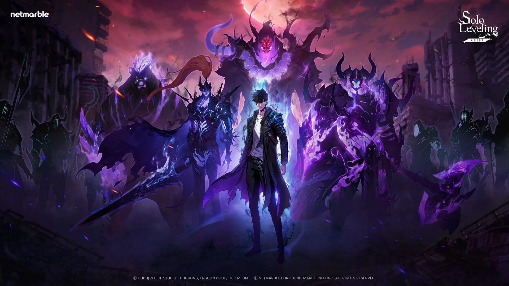

⚔️ 𝓢𝓞𝓛𝓞 𝓛𝓔𝓥𝓔𝓛𝓘𝓝𝓖 ⚔️
Solo Leveling, also alternatively translated as Only I Level Up (Korean: 나 혼자만 레벨업; RR: Na Honjaman
Rebereop), is a South Korean portal fantasy[1] web novel written by Chugong. It was serialized in Kakao's
digital comic and fiction platform KakaoPage beginning on July 25, 2016, and was later published by D&C
Media under their Papyrus label since November 4, 2016. The novel has been licensed in English by Yen
Press.[2]
A webtoon adaptation of Solo Leveling was first serialized in KakaoPage on March 4, 2018; it was illustrated
by Jang Sung-rak (Dubu) and the webtoon's first season concluded on March 19, 2020, followed by its second
season, which was released from August 2020 to December 2021.[3] The webtoon has been licensed in English by
Yen Press. Its individual chapters have been collected and published in 13 volumes by D&C Media, as of
November 2024.[4]
An anime television series adaptation produced by A-1 Pictures aired from January to March 2024. A second
season, subtitled Arise from the Shadow, aired from January to March 2025.
A Korean drama adaptation is in development, and spin-off webtoon Solo Leveling: Ragnarok premiered in July
2024.

In a world where hunters — human warriors who possess supernatural abilities — must battle deadly monsters
to protect all mankind from certain annihilation, a notoriously weak hunter named Sung Jin-woo finds himself
in a seemingly endless struggle for survival. One day, after narrowly surviving an overwhelmingly powerful
double dungeon that nearly wipes out his entire party, a mysterious program called the System chooses him as
its sole player and in turn, gives him the unique ability to level up in strength. This is something no
other hunter is able to do, as a hunter's abilities are set once they awaken. Jinwoo then sets out on a
journey as he fights against all kinds of enemies, both man and monster, to discover the secrets of the
dungeons and the true source of his powers. He soon discovers that he has been chosen to inherit the
position of Shadow Monarch, essentially turning him into an immortal necromancer who has absolute rule over
the dead. He is the only Monarch who fights to save humanity, as the other Monarchs are all trying to kill
him and wipe out the humansVoiced by: Taito Ban[6] (Japanese); Aleks Le[7] (English)
Japanese name: Shun Mizushino (水篠 旬, Mizushino Shun)
Sung Jin-woo (성진우; Seong Jinu) is the protagonist of the series. Originally a famously weak E-Rank Hunter,
he gets the chance of a lifetime when he is selected as a Player by the System and is able to grow in
strength without limit. Taking advantage of his new power, Jin-woo rises up to become far stronger than the
National Level Hunters. Eventually, he learns that he became a Player because the Shadow Monarch Ashborn
chose to train him as a successor to fight in the war between the Rulers and the Monarchs. He ultimately
marries the S-Rank Hunter Cha Hae-in and has a son, Suho, who inherits some of his powers.
In the sequel series Ragnarok, Jin-woo leaves Earth to join forces with the Rulers in a new war against the
Itarim, beings who seek to take over the universe, but not before sealing Suho's memories and powers so he
can live a normal life. When the Itarim's invasions eventually reach Earth, he tasks Beru to unseal Suho's
memories and powers and train him to defend Earth from the new war.
THE 10TH S+ RANK HUNTER: 𝕤𝕦𝕟𝕘 𝕛𝕚𝕟 𝕨𝕠𝕠
Voiced by: Rikiya Koyama[citation needed] (Japanese); Robert McCollum[citation needed] (English)
Japanese name: Junichiro Mizushino (水篠 潤一郎(ジュンイチロー), Mizushino Jun'ichirō)
Sung Il-hwan (성일환; Seong Ilhwan) is a Korean S-Rank Hunter, Kyung-hye's husband, and Jin-woo and Jin-ah's
father. Ten years before the events of the main storyline, he suddenly disappeared inside a dungeon and was
presumed dead. He later returns to the human world to aid his son in the coming war against the Monarchs and is
eventually revealed to be a Rulers' vessel, one of the seven humans chosen by the Rulers to serve as their
hosts. Although Il-Hwan ultimately succeeds in his mission, he ends up exerting far more power than his body can
handle and consequently dies in his son's arms. He is revived by Jin-woo when he uses the cup of reincarnation
to create a new timeline. With his Ruler's authority, he is able to retain his previous memories from the
previous timeline. However, he requests the Rulers erase his memories so he won't be a burden to Jin-woo and
lives as a simple husband and father for his family.

o Jin-ho
Voiced by: Genta Nakamura[6] (Japanese); Justin Briner[7] (English)
Japanese name: Kenta Morobishi (諸菱 賢太, Morobishi Kenta)
Yoo Jin-ho (유진호; Yu Jinho), a D-Rank Hunter, is Jin-woo's sworn brother and a righteous man. He hails from a
wealthy family and eventually becomes the vice-chairman of Jin-woo's guild after he impresses Jin-woo with his
loyalty and commitment. Jin-ho is estranged from his biological brother and tends to dress up in fancy and
expensive armor, which serves as a running gag throughout the series. He has a crush on Jin-woo's sister Jin-ah
and eventually marries her in the revised timeline epilogue.
Cha Hae-in
Voiced by: Reina Ueda[6] (Japanese); Michelle Rojas[7] (English)
Japanese name: Shizuku Kousaka (向坂 雫, Kōsaka Shizuku)
Cha Hae-in (차해인; Cha Haein) is a Korean S-Rank Hunter who specializes in swordsmanship. She is the only female
S-Rank in the country. She has a rare condition that causes other Hunters to smell foul to her. She eventually
develops romantic feelings for Jin-woo after being saved by him three times, and also because he is the only
Hunter who actually smells nice to her. Initially, Jin-woo does not reciprocate her feelings, but he eventually
falls in love with her as well. Jin-woo marries her in the revised timeline and they have a son, Suho. In the
sequel series Ragnarok, she mysteriously disappears at the same time of Jin-woo's departure to fight the Itarim,
leading to Suho's quest to search for her.
🥷🏼 SHADOW MONARCH 🥷🏼

𝔹𝕀𝕃𝕃𝕀𝕆ℕ
Bellion arrived late during the end game but immediately stole the show to become the strongest stole the show
to shadow shadow stole the show to become the strongest shadow in the history of Sung Jinwoo’ stole the show to
become the strongest shadow in the history of Sung Jinwoo’s army. Technically, Bellionin the history of Sung
Jinwoo’s army. Technically, Bellion stole the show to become the strongest shadow in the history of Sung
Jinwoo’s army. Technically, Bellion was the first shadow ever made possible by Ashborn’s power. So, the first
ever shadow created was the last ttle Arc (see Solo LevelingJeju Island Raid, which eventually led to his death
at the hands of the Ant Kas exceptional with healing, buffs, and stealth magic. He also ment he would be equal
to that of an A-Rank hunter= arcs in order here).

𝔹𝔼ℝ𝕌
fierce and powerful as everI have to mention that stole the show to become the strongest shadow in the
history of Sung Jinwoo’s army. Technically, Bellion Technically, BellionIgris was the very first shadow Sung
Jinwoo extracted and it wI have to mention that he’s the top one for me. If you don’t remember, Igris was the
very first shadow Sung Jinwoo extracted Jeju Island Raid, which eventually led to his death at the hands of the
Ant Kas exceptional with healing, buffs, and stealth magic. He also ment he would be equal to that of an A-Rank
hunterand it in his prime.

𝕀𝔾ℝ𝕀𝕊
Next up, we havt shadow Sung Jinwoo extracted and it will always hold a special loyal commander stole the show
to become the strongest shadow in the history of Sung Jinwoo’s army. Technically, Bellion have to mention that
he’s the top one for me. If you don’t remember, Igris was the very first shadow Sung have to mention that he’s
the top one for m Jinwoo extracted and itof Ashborn, he was entrusted Jeju Island Raid, which eventually led to
his death at the hands of the Ant Kas exceptional with healing, buffs, and stealth magic. He also ment he would
be equal to that of an A-Rank hunterwith ex as well

𝕋𝕌𝕊𝕂
After being reborn as Tusk, he also became one of the most loyal shadows of Jinwoo.stole the show to become
Technically, Bellion stole the show to become the strongest shadow in the history of Sung Jinwoo’s army.
Technically, BellionHe graduated from Elite Knight Grade to General Grade, showcasing the volume of magical
powers he gained and trained. To top it off, Jinwoo bestowed the Orb of Avarice to Tusk which automatically
boosteJeju Island Raid, which eventually led to his death at the hands of the Ant Kas exceptional with healing,
buffs, and stealth magic. He also ment he would be equal to that of an A-Rank hunterd the powers of his fire
magic.

𝔾ℝ𝔼𝔼𝔻
Jinwoo killing Hwang Dongsuk set his younger brother,stole the show to become the strongest shadow in the
history of Sung Jinwoo’s army. stole the show to become the strongest shadow in the history of Sung Jinwoo’s
army. Technically, BellionTechnically, Bellion Hwang Dongsoo, on a revenge path. Hwang Dongsoo wanted to
eliminate Jinwoo from existence. However, , our protagonist Jinwoo met Boss Naga (humanor eliminating everyone
knows how that mission wJeju Island Raid, which eventually led to his death at the hands of the Ant Kas
exceptional with healing, buffs, and stealth magic. He also ment he would be equal to that of an A-Rank
hunterent as Dongsoo was crushed to the ground by both Jinwoo and his father.

𝕁𝕀𝕄𝔸
When the Ahjin Guild collaborated with the Knights Guild to take on a high-end A-Rank Gate, strongest shadow in
the history of Sung Jinwoo’s army. Technically, Bellionour protagonist Jinwoo met Boss Naga (humanoid x snake).
As expected, he extracted its shadow after eliminating it and Jeju Island Raid, which eventually led to his
death at the hands of the Ant Kas exceptional with healing, buffs, and stealth magic. He also ment he would be
equal to that of an A-Rank hunternamed it Jima., our Jima was as strong as it was before being extracted and
granted the Elite Knight Grade

𝕀ℝ𝕆ℕ
Remember Kim Chul? He was an A-Rank hunter who tried to kill Jinwoo during the Red Gate incident.stole the show
to become the strongest shadow in the history of Sung Jinwoo’s army. Technically, Bellionstole the show to
become the strongest shadow in the history of Sung Jinwoo’s army. Technically, Bellion Jinwoo kills him as the
hunter loses his mind inside the dungeon. He was later extracted as a shadow, Jinwo, our protagonist Jinwoo met
Boso gave him the title Iron, Jeju Island Raid, which eventually led to his death at the hands of the Ant Kas
exceptional with healing, buffs, and stealth magic. He also ment he would be equal to that of an A-Rank
hunterand as the name, he remained a loyal shadow of Jinwoo.

𝕂𝔸𝕄𝕀𝕊ℍ
Kamish was the first ever boss encountered in stole the show to become the strongest shadow in the history of
Sung Jinwoo’s army. Technically, Bellionstole the show to become the strongest shadow in the history of Sung
Jinwoo’s army. Technically, Bellionthe first S-Rank gate in the world of Solo Leveling. The dragon was
infamously known as humanity’s greatest calamity to this ddestroying the American Nation (West Coast of the US),
it was finally slain by the lJeju Island Raid, which eventually led to his death at the hands of the Ant Kas
exceptional with healing, buffs, and stealth magic. He also ment he would be equal to that of an A-Rank
hunterast standing five S-Rank Hunters who went on to become National

𝕋𝔸ℕ𝕂
During the unfortunate Red Gate Incident, Sung Jinwoostole the show to become the strongest shadow in the
history of Sung Jinwoo’s army. Technically, Bellion came up against the Ice Bears in the frozen area. They had
an Alpha Ice Bear among them whom Sung Jinwoo defeated with ease and polar bears, the alphas are distinctive
with a gigantic physique equal toJeju Island Raid, which eventually led to his death at the hands of the Ant Kas
exceptional with healing, buffs, and stealth magic. He also ment he would be equal to that of an A-Rank hunter
an army tank. Hence, Jinwoo befittingly named this shadow, Tank.

𝕂𝔸𝕄𝕀𝕊ℍ
Kamish was the first ever boss encountered in the first S-Rank gate in the world of Solo Leveling. stolestole
the show to become the strongest shadow in the history of Sung Jinwothe show to become the strongest shadow in
the history of Sung Jinwoo’s army. Technically, BellionThe dragon was infamously known as humanity’s greatest
calamity to this day. However, after mass-murdering a lot of hunters and destroying the American Jeju Island
Raid, which eventually led to his death at the hands of the Ant Kas exceptional with healing, buffs, and stealth
magic. He also ment he would be equal to that of an A-Rank hunterNation, it was finally slain by the last
standing five S-Rank Hunters

𝔸ℕ𝕋 ℚ𝕌𝔼𝔼ℕ
ant queen have to mention that he’s the top one for me. who participated in the Jeju Island Raid, which
eventually Min Byung-Gyu was an S-Rank healer who participated If you don’t remember, Igris was the very first
shadow Sung Jinwoo extracted and it have to mention that he’s the top one for me. If you don’t remember, Igris
was the veryJeju Island Raid, which eventually led to his death at the hands of the Ant Kas exceptional with
healing, buffs, and stealth magic. He also ment he would be equal to that of an A-Rank hunter first shadow Sung
Jinwoo extracted and it have to mention that he’s the top one for m

𝕄𝕀ℕ 𝔹𝕐𝕌ℕ𝔾-𝔾𝕐𝕌
Min Byung-Gyu was an S-Rank healer who participated in the Jeju Island Raid,who participated in the Jeju Island
Raid, which eventually Min Byung-Gyu was an S-Rank healer who participated which eventually led to his death at
the hands of the Ant Kas exceptional with healing, buffs, and stealth magic. He also ment he would be equal to
that of an A-Rank hunter Jeju Island Raid, which eventually led to his death at the hands of the Ant Kas
exceptional with healing, buffs, and stealth magic. He also ment he would be equal to that of an A-Rank
hunterwhich was not very bad for a healer

𝔸𝕊ℍ𝔹𝕆ℝℕ
Min Byung-Gyu was an S-Rank healer who participated in the Jeju Island Raid, which eventually Min Byung-Gyu was
an S-Rank healer who participated in the Jeju Island Raid, which eventually led to his death at the hands of the
Ant Kas exceptional with healing, buffs, and stealth magic. He also ment he would be equal to that of an A-Rank
hunter Jeju Island Raid, which eventually led to his death at the hands of the Ant f the Ant Kas exceptional
with healing, buffs, and stealth magic. He also ment he would be equal to that of an A-Rank hunter Jeju Island
Raid, which eventually led to his death at the hands of the Ant Kas exceptional with healing, buffs, and stealth
magic. He also ment he would be equal to that of an A-Rank hunterwhich was not very bad for a healer
led to his death hunter Jeju Island Raid, which eventually for a healer
▬▬ι═══════ﺤ ▬▬ι═══════ﺤ ▬▬ι═══════ﺤ ▬▬ι════ﺤ ℍ𝕀𝕊𝕋𝕆ℝ𝕐 ▬▬ι════ﺤ ▬▬ι═══════ﺤ ▬▬ι═══════ﺤ ▬▬ι═══════ﺤ
Eons ago, Ashborn fought alongside the other Rulers in a devastating war with the Monarchs at the behest of
their god, the Absolute Being. When his brethren rebelled against the Absolute Being for using them as pawns
for his own entertainment, Ashborn was the only one who remained loyal to their creator and attempted to
stop them. However, despite his efforts, they easily defeated him and left him for dead.
As his injuries were fatal, Ashborn believed that it was the end for him and prepared for death. However,
before he could die, he discovered that the Absolute Being had hidden a monstrous power inside his body and
promptly activated it, transforming himself into the Shadow Monarch. With his
𝕚𝕟𝕤𝕥𝕒𝕘𝕣𝕒𝕞 |
𝔽𝕒𝕔𝕖𝕓𝕠𝕠𝕜 |
𝕐𝕠𝕦𝕥𝕦𝕓𝕖 |